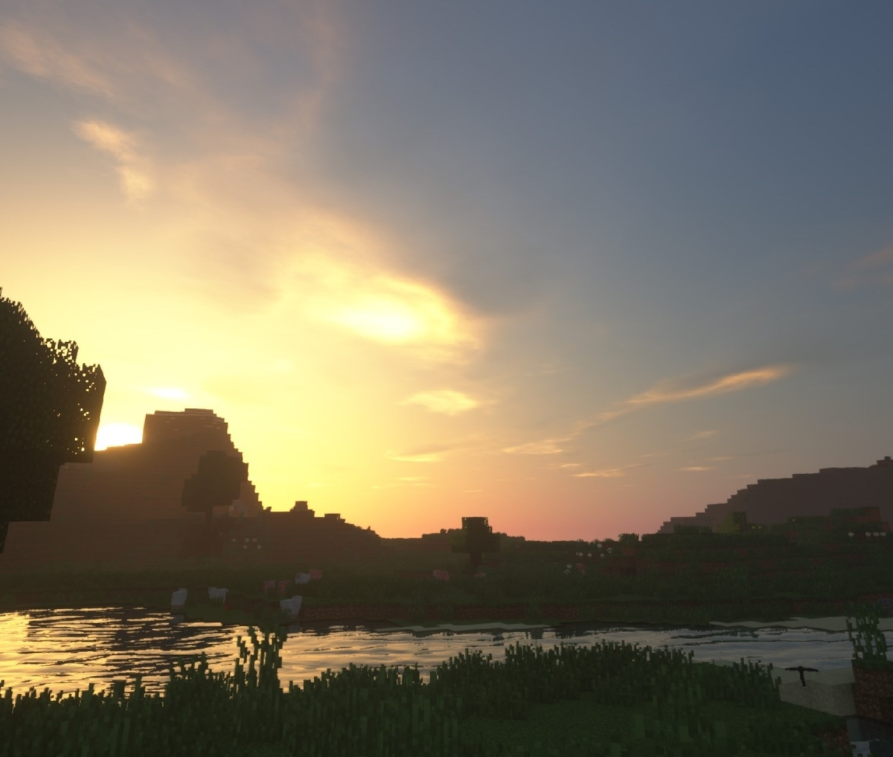
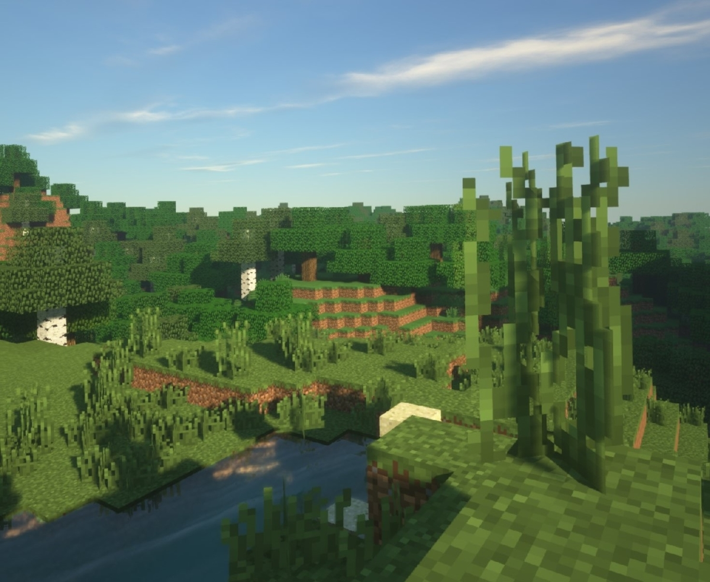

投稿日: 2020/03/06 00:05:41
カテゴリ: なし
サムネイル: 
最近Oculus Riftを購入して、Vivecraftにハマった。自分マイクラにハマるの何回目だろう…。
今までやってきたマイクラ体験の中でも特に印象に残ったので、簡単に記事にしてみた。
(スクリーンショットはOculus Riftで撮影。影modはSEUS Renewd。)
自分はまだOculusに慣れてなくて酔うので、まだ長時間はできない。でもほんの短時間ですら、とにかく没入感がすごくて、単に木の葉っぱの一つ一つを取るだけで感動。何よりもブロックが大きい。1m x 1mっていう設定なのはマイクラ全部そうなんだけど、実際に自分の目の前にその物体があると、とにかくデカい。ブタさんや羊さんもデカくて可愛い。余計倒したくなくなる。
SEUS Renewedで影mod入れてるので、もう目に入る一つ一つが美麗すぎてすごい。影modがすごいのは元々PC版の魅力だし、それをVRで引き出せるっていうのは感激の極み。影modの新しいのが出るたびにマイクラにハマる自分だけど、VRは特にすごいと思った。Vivecraftの魅力は、こういう自分の好きなmodをそのまま使える点にもあると思う。

あと何がすごいかって、やっぱり没入感がすごい。
今まで通常のマイクラをしてたときは、影modでいくら画面が美麗とはいえ、どこかゲームしてる感というか現実逃避感はあった。でもVRだとその前提から覆る。まさにソードアート・オンラインのそれというか、自分がここに居るんだ、自分の手足で動くんだ、と生々しく感じる。多分VR酔いの一種ではあるのだけど、少し動くと疲れる気がするのでさえリアルで、疲れたら立ち止まって木陰から山並みを見上げていられる贅沢さもとても現実味がある。
こういう、自分のペースで好きにプレイできるゲームこそ、VRゲームに向いてる気がした。
個人的に、OculusやViveなどのスマホじゃないVRの魅力は、特に、高解像度・正確な遠近感・没入感にあると思っていて、この３つがマイクラVR (Vivecraft) ではまじまじと体験できる。
自分はこれまでは、スマホのVRを使って、YouTube VRとかGoogle Earth VR、Sketchfab VRのようなどちらかというと固定視点での定点VRばかり体験していて、それでも充分に満足していた。
ただスマホのVRはリフレッシュレートが低いので酔いやすく、解像度も低いので、あまりゲームには向いていない。一方でPSVRやOculusなどは、スペックさえ伴えば90〜120Hzのリフレッシュレートを維持することができるので、ある程度顔を激しく動かしても、(慣れてさえいれば) それほど酔うことはない。
自分はそのことをPSVRで体験して (特にFateのマシュVRは良かった)、これなら自分でもVRゲームができると感じた。一方で、PSVR版のSkyrim VRを体験したところ、描画解像度が低くて、さすがに酔った。描画解像度はコンテンツにかなり左右される。それがOculus Riftを買った大きなきっかけとなった。
Oculus Riftなら、自分のPCスペック次第で自由に描画クオリティをコントロールできるし、何よりPS4に縛られないコンテンツの豊富さがあるので、とても自由度が高い。その一方でGPUとCPUへの負荷は大きいので、高いスペックが必要となる。
そういう意味で、Oculus Riftのポテンシャルを最大に試せるのもマイクラVRなんじゃないかと思う。最近ではRTXを使ったリアルタイム・レイトレーシングにも対応しているし、スペックさえ許せば好きにmodを追加して高解像度化などもできる。
自分が一番マイクラVR、Vivecraftの魅力だなと思ったのは、影modを利用したときの自然の美麗さだと思った。modが自由に適用できるのはPC版VRの魅力。
VRをはじめとした3Dコンテンツって、立体感を売りにすることが多くて、ローラーコースターみたいに遠近感が強調されてたり、機械的な演出が多いものもある。そうでないものも、ゲーム演出の都合で画面遷移が速いものが多いと思う。
でもその点マイクラVR + 影modは、とにかく自然の描写が圧倒的で、人に寄ると思うけれどゆっくりとマイペースでプレイできる。まぁ 1m x 1m のブロックに代表されるように世界はかなりデジタルなのだけれど、これだけ自由度が高くて、周りをゆっくり見渡せて、自分のペースで世界を体験できるのは他のVRコンテンツにあまりない魅力だと思った。
これはオープンワールゲーム全般の特徴でもあるのだけど、何にも急かされずに自分のペースで体験できるというのは、個人的にはとてもVRと相性が良いと思う。別の世界に潜って、没入感を体験するのが魅力のVR。だからこそ、時間の流れがゆったりなオープンワールドを体験するのは最高だと感じた。
あぁ早く、ソードアート・オンラインVRみたいなのがSteamとかに出ないだろうか…。
(オープンワールドと関連して、個人的には、Fuelというゲームが大好きで、そのVR版とかあったら即買いたい。そしたら無限にVRの広野を駆け巡りたい。Project Cars 2とか近いのかな。)